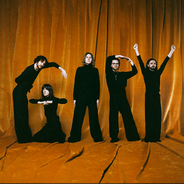

01.11.2024, Ingo Hose
Hörempfehlung: Blossoms - Gary
30 Minuten feinste Indie-Disco mit viel four-on-the-floor, Ohrwurmpotential und charmanten Texten

Im März 2023 ereignete sich ein Skandal im Lanarkshire Garden Center unweit Glasgows: die allseits beliebte ca. 2 1/2m große Gorillastatue Gary wurde in einer Nacht-und-Nebel-Aktion vom Gelände entwendet. Die Geschichte um Gary bewegte die Menschen und so auch die 5-köpfige Band Blossoms aus Stockport, die den Krimi nicht nur musikalisch dokumentierten, sondern dem Gorilla gleich ein ganzen Album widmeten. Nun, zumindest dem Namen nach.
Neben der titelgebenden Single „Gary“, die ein größerer Ohrwurm kaum sein könnte, umfasst das Album neun weitere Disco-Pop/Rock-Tunes. Stets mit groovigem Bass, funky Gitarren und einer gesunden Prise Synthis wollen sie zum Tanzen anregen, aber auch Tipps für verschiedene Lebenslagen bieten. Ogdens Texte beschäftigen sich beispielsweise mit der Frage wie man sich am besten entschuldigt, das Maximum des eigenen Potentials entfaltet oder man die Schlange vor dem Nightclub am geschicktesten umgeht. Selbstverständlich mit einem Hauch Ironie versehen.
Diese findet sich übrigens nicht nur in den Texten, sondern auch in den Musikvideos wieder. Beispielsweise in dem zur Titelsingle „Gary“, das den Gorillaraub nachzeichnet und für die Nachwelt dokumentiert. Ein Happy-End gab es zum Zeitpunkt der Dreharbeiten noch nicht und kann nun auch nur bedingt nachgereicht werden. Zwar wurde Gary etwa ein Jahr später wiedergefunden, jedoch haben ihn die Diebe der Höhe nach halbiert und nur die Rückseite übrig gelassen. Wo sich Garys Frontseite aufhält, verbleibt unklar.
Klar ist nur, dass wir eine absolute Hörempfehlung für das fünfte Studioalbum der Blossoms aussprechen können.
- Big Star
- What Can I Say After I'm Sorry?
- Gary
- I Like Your Look
- Nightclub
- Perfect Me
- Mothers
- Cinnamon
- Slow Down
- Why Do I Give You The Worst Of Me?
Erschienen am 20.09.2024 via ODD SK Recordings
KW 43 Playlist-Update: Fresh Fit
Hank Heaven - MatchstickKings & Pills - Bluff
Lexa Gates - Stupid
Max Frost - Car Stereo
Sohodolls - Tear You Apart
SWEED - Autumn
Max Frost hat zweifelsohne ein musikalische Entwicklung genommen, die ihn allmählich wegführte vom einstigen "One-Man-Power-Pop" zum nun eher zurückhaltenden Singer-Songwriter-Style mit gelegentlichen Ausbrüchen in andere Genre-Ästhetiken. Genau das ist auch "Car Stereo", ein verträumter unaufdringlicher Pop-Song, der sich jedoch so bequem im Gehörgang einbettet, dass es fast irritiert, wenn es stellenweise doch etwas kräftiger zugeht. Kräftiger, wie zum Beispiel auch bei "Bluff", mit dem Kings & Pills zeigen, dass sie ruhig und krawallig gleichermaßen können.
KW 42 Playlist-Update: Fresh Fit
BEACHPEOPLE - LEAVING THE BANDFamous Friend - Josie
half•alive - Automatic
Kakkmaddafakka - Head In My Hands
Mattiel - Somebody's Knocking
Mt. Joy - She Wants To Go Dancing
unpeople - The Garden
Warmduscher - Cleopatras
Mit "Josie" kredenzen uns Famous Friend ein herrliches Dream-Pop-Cover, das einfach gute Laune macht. Gute Laune ist auch bei Kakkmaddafakka angesagt, die für "Head In My Hands" das Glockenspiel aus dem Schrank holen. Melodisch in der Strophe ein bisschen Dido, doch insgesamt einfach happy! Ganz anders Warmduscher, die in "Cleopatras" von Rechnungen und Kummer singen. Es müssen aber ja auch nicht immer nur Happy-Songs sein, vor allem wenn sie derart slappen! Apropos slappen, mehr muss man zu "The Garden" von unpeople eigentlich nicht sagen.
KW 41 Playlist-Update:
Fresh Fit
dye - feeLLinda Lindas, The - Nothing Would Change
Nadia Reid - Baby Bright
Outside Air - XYZ
Smile, The - Eyes & Mouth
Wombats, The - Sorry I'm Late, I Didn't Want To Come
Zack Keim - Incredible
Angeblich zu spät, aber doch irgendwie "zu früh" veröffentlichten The Wombats ihre neue Single "Sorry I'm Late, I Didn't Want to Come" inklusive Musikvideo bereits am Mittwoch - zumindest, wenn man vom klassischen Release-Friday ausgeht. Tatsächlich kommt diese Single aber zur absolut richtigen Zeit und kündigt das neue Album Oh! The Ocean an, dass am 21. Februar 2025 erscheint. Ebenfalls vorab veröffentlichte Nadia Reid ihre zweite Single "Baby Bright" und schlägt damit nachdenkliche und melancholische bis gar herzzerreißende Töne an. Open Air sind zwei Drittel der ehemaligen Indie-Pop-Gruppe Sure Sure. Nun veröffentlichten sie ihr Debüt-Werk Forever und starten mit "XYZ" stark in ein Album, das alteingesessene Sure Sure-Fans "sicher sicher" positiv gestimmt in die Zukunft blicken lässt.
KW 40 Playlist-Update:
Fresh Fit
Blossoms - NightclubCarter Vail - Baked Alaska
Daphnie - Perfect Piece of Person I'm Made For
Darwin Deez - Caroline
Faye Webster - After the First Kiss
Grinns, The - Gamblin
Mood Bored - Wake Up With You (WUWU)
Orla Gartland - Backseat Driver
Planetoids, The - Space Bar
Royel Otis - If Our Love Is Dead
Sunday (1994) - Blossom
Villagers - Mountain out of a Molehill
Warhaus - No Surprise
Scheinbar verfiel Darwin Deez dem kürzlichen Schach-Hype und widmete dem Sport nun mit "Caroline" einen eigenen Song. Während das Schachspielen eher eine Hürde darstellt, klappt es mit dem Schreiben catchiger Songs weiterhin sehr gut. Letzteres gilt auch für Faye Webster und ihrer neuen Single "After The First Kiss" wie auch für Royel Otis, die nicht müde werden ihrem diesjährig erschienen Album "PRATTS & PAIN" stetig neue Songs nachzuliefern. Damit wir uns aber nicht von Villagers vorwerfen lassen müssen einen "Mountain out of a Molehill" zu machen, holen wir hier lieber nicht noch weiter aus...
Diese und weitere Songs hörst du nun in unserer Sendung Fresh Fit.
Radio-indie.hose gestartet!
Dein neues Lieblingsradio ist online und versorgt dich ab sofort mit Neuheiten und Indie-Perlen unter dem Radar.
Hör doch gleich mal rein und gib uns Feedback bei Insta unter @radio-indie.hose